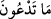

akıllılardan bile olsa ibâdete hak kazanmak durumundan tamamen uzaktır. Ya bunlar
cansız ve akılsız iseler, nasıl ibâdete hak kazanıp ilâh olurlar ki?
“Eğer” dâvânızda “doğru iseniz, bundan önce (inmiş olan) bir Kitap yahut”
öncekilerin ilimlerinde sizin yanınızda kalmış olup bu taptıklarınızın ibâdete hak
kazanmış olduklarına şâhid olan “bir bilgi kalıntısı getirin.” Çünkü bir dâvâ aklî yahut
naklî bir delil olmadığı sürece ispat edilemez. Aksine aklî ve naklî birçok delil mevcut
iken sizin dâvânıza hiçbir aklî ve naklî delil olmayınca dâvânızın bâtıl olduğu ortaya
çıkmıştır.
“Gördünüz mü? Onlar yerden neyi yarattılar?” Bana gösterin.” Bu cümle “
”daki
kapalılığı beyân mahiyetindedir. Yâni yeryüzünün cüzlerinden hangisinde Allah dışında
münferiden bir şey yaratmışlardır? “
” kelimesinin birinci mef’ûlü “
”, ikinci
mef’ûlü ise “
”dur. Bunun mânâsı ise, “ilâhlarınızın hâlini bana haber verin”
demektir.
“Yoksa gökler(in yaratılışın)da onların bir ortaklığı mı var?” Görüldüğü gibi sizin
mâbudlarınız (ibâdet ettiğiniz tanrılar) âcizdirler. Onların yerde ve gökte herhangi bir
tasarrufları yoktur. O halde neden ibâdet etme konusunda bana ortak koşuyorsunuz.
Şâyet “İsâ (a.s.) hakkında ne diyeceksin? O ölüleri diriltir, çamurdan kuş yaratır ve bir
başkasının yapamayacağı daha nice şeyler yapardı” dersen ben de şöyle derim: “O,
Allah’ın ona verdiği özel bir kudret ve izinle olan şeydir. Bu durum onun hadd-i zatında
bu işlerden âciz olmasıyla çelişmez. Ortaklığın yerle değil de göklerle alakalı olarak
zikredilmesi yâni yere şâmil olacak şekilde olmaması şunun içindir. Çünkü yüce
âlemlerdeki eserler yüce ve yüksek oldukları, direksiz ve sütunsuz olarak yükseltilmiş
oldukları için bunlar yalnız Allah’ın yaratmış olmasına daha belirgin bir biçimde
delalet etmektedir. Yahut süflî yeryüzünde meydana gelen hâdiselerin îcâdında sanki
aracıların bir ortaklığı varmış gibi bir vehmi ortadan kaldırmak için sadece göklerde
ortaklıktan söz edilmiştir.”
Yani şâyet “onların yerde ortaklığı mı var?” denseydi, sanki yerde meydana gelen
hâdiselerin îcâdında göklerin bir tesir ve ortaklığının varlığı vehm olunurdu. Bu yorum
buradaki “em” kelimesinin “munkatıa” oluşu itibariyledir. Daha belirgin olan durum ise
âyetin delili bulunduğu için muttasıle olan “em” in hazfedilmiş olması kabilinden
yapılmasıdır. Takdir şudur: Onların yerde yahut göklerde ortaklığı mı vardır. Müfti
Sa’dî’nin Havaşî’sinde böyledir.
“Eğer doğru iseniz, bundan önce Kitâp, yahut bir bilgi kalıntısı getirin.” Bu
kitaptan yâni Kur’ân’dan önce kitap getirin. Yâni “ilâhî olan bir kitap getirin” demektir.
Zira Kur’ân tevhidi haykırıp şirki iptal etmektedir. Getireceğiniz bu kitap sizin dininizin
doğruluğuna delâlet etmiş olsun. Yâni bütün semavî kitaplar, Kurân’ın konuştuğu
hakikati konuşmaktadırlar. Bu ifâde onları aklî delil ile âciz bıraktıktan sonra bir de
naklî delil ile âciz bırakıp susturmaktadır. “Bâ”, ta’diye içindir.
“Yahut bir bilgi kalıntısı getirin.” Evvelkilerin ilimlerinden size kalmış bir eser